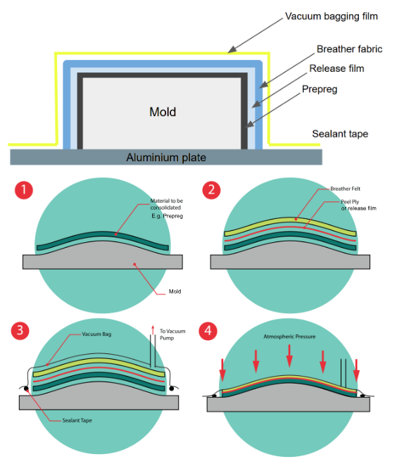
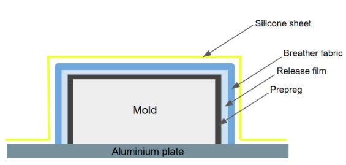

IS-409: Innovative Design for Composite Tooling
Chun Jiyun
CDE4301 Innovation & Design Capstone
AY2024/2025 Semester 2
Acknowledgement
I would like to express my sincere gratitude to my project supervisors, Lim Hong Wee and Kenneth Neo, for
their unwavering support, patience, and guidance throughout this project. Their extensive experience and
technical expertise have been invaluable, helping me navigate challenges and refine my ideas.
I would also like to extend my thanks to Dr. Elliot Law, the examiner for this project, for his insightful and
constructive feedback, which greatly contributed to the enhancement of this work.
Finally, I appreciate all the professors and mentors who have shared their knowledge and wisdom with me over
the past four years of my Bachelor's degree.
Table of Contents
Abstract
This project introduces a sustainable vacuum bagging system that replaces traditional single-use materials with a reusable silicone sheet. Leveraging silicone's high thermal resistance and elongation properties, the system addresses key challenges in in-house composite manufacturing, including cost, waste, time, and skill dependency. Experiments characterized silicone behavior under vacuum, evaluated mold compatibility and edge conformity, and examined the relationship between mold height and curvature. The design was validated through the fabrication of composite heel rest and brake heel rest components for a NUS FSAE race car, demonstrating reduced weight and enhanced performance compared to the conventional 3D printing method they use.
List of Tables
List of Figures
1. Introduction
Composite material is made from combining two or more different materials with distinct physical or chemical properties to create unique properties such as enhanced strength and reduced weight compared to the original material alone. Composite materials are the product of fiber material, such as carbon, and matrix material, like epoxy resin. Fiber is the key to strength and stiffness, and matrix material acts as a bonding agent, holding the fiber together. (McClements & Lichtig, 2023) One of the commonly used composite materials is carbon fiber.
1.1. Growing Global Demand For Composite Materials
Recent statistics, shown in Figure 2, show that the market value of composite materials worldwide is projected to increase to 67 billion U.S. dollars in 2031 from 49.3 billion U.S. dollars in 2024. (Lucintel, 2025) Due to the superior strength-to-weight ratio, durability, and design flexibility of composite materials, they are commonly used in transportation (e.g. race cars, aircraft), electronics, and construction market as shown in Figure 3. (AVK, 2025) For example, the main body and the wings of an aircraft can be manufactured using composite material illustrated in Figure 4.
1.2. Composite Manufacturing In Industry vs. In-House
In large-scale industries such as Boeing, they often manufacture large volumes and large-scale composite parts. Therefore, such large industries use highly advanced and established technologies like automated fiber placement to fabricate their air vehicle structures (Brasington et al., 2021), which is shown in Figure 5 below. Automated fiber placement uses a robotic system to lay down strips of fiber material onto the mold of the part that is desired to be manufactured. (Brasington et al., 2021)
However, as global market value and demand for composite materials increase, composite manufacturing is no longer confined to large-scale industries. Instead, composites are fabricated on a smaller scale and in lower volumes. This is called in-house composite manufacturing. This method typically employs a hand lay-up process, where the technician manually lays composite materials onto a mold, rather than relying on advanced robotic systems. In-house composite manufacturing is favored by markets producing diverse part sizes, lower production volumes, and customized products to meet specific consumer needs. For example, the National University of Singapore Formula SAE team uses composite materials to produce various parts in their race car, as carbon fiber exhibits a high strength-to-weight ratio making it suitable for high-performance race cars. This includes larger structures like the front wing, which is 1.3m x 0.5m x 0.06m (Figure 6), as well as an electronics box which can be as small as 15cm x 15cm x 15cm.
1.3. Three In-House Composite Manufacturing Processes
There are three major carbon fiber lay-up processes for in-house manufacturing: Wet lay-up, resin transfer
molding and prepreg lay-up.
Wet lay-up is done by manually applying resin to the layers of dry
fiber reinforcement. This requires handling wet resin and ensuring that the resin is evenly distributed with
the right amount. (Campbell, 2004)
Resin transfer molding uses a resin injection system to inject the resin into a closed mold containing dry carbon fibers. (Jamir et al., 2018)
Lastly, prepreg lay-up is carbon fiber that has already been coated with a partially hardened resin. Instead of pouring liquid resin onto the carbon fiber by hand, each sheet already has the right amount of resin evenly spread through it. These sheets are carefully placed on top of each other on the mold of the part that you want to produce. Then, once the stack of layers is complete, they’re placed under vacuum and heated (often in an oven) to complete the curing process and is demolded. (Campbell, 2004)
Out of the three carbon fiber layup processes, this project will use prepreg in the subsequent sections of the report. Prepregs offer consistent quality of composite parts as there is a uniform fiber-to-resin ratio and consistent thickness per ply. They are also the easiest ones to handle as it doesn’t use liquid resins and this effectively reduces the curing time since the resin system is already partially cured.
1.4. Using Prepreg To Fabricate A Composite Part
Manufacturing a functional composite part using prepreg involves a series of steps and several auxiliary materials. Table 1 provides a detailed breakdown of the key steps involved in this process.
Figure 10 below shows the entire prepreg lay-up enclosed in a vacuum bag connected with a vacuum fitting. The auxiliary materials needed for this process include:
- Vacuum bagging film
- Sealant tape
- Release film
- Breather fabric
In real life, the entire assembly looks like Figure 11 below. The prepreg lay-up is enclosed by the yellow vacuum bagging film using yellow sealant tape around it.
1.5. Challenges In Vacuum Bagging Process
Although the vacuum bagging process is a crucial step in any in-house composite manufacturing process, it poses four major challenges:
- Skill dependency
- Time intensive
- High cost
- Environmental impact
The first challenge is that vacuum bagging is a highly skill-dependent process. As the vacuum pump sucks out
the air inside, the vacuum bag easily forms folds on the lay-up, especially for deep corners and complex
shapes. These folds are very critical as they can lead to inconsistent vacuum pressure, resulting in bridging,
voids, or pinholes that can compromise the strength and quality of the final composite part. Therefore, a
proper pleating process is required by the technician when vacuuming the bag to ensure that it’s fully
conformed to the mold, including deep corners. This increases the complexity of the process and increases the
demand for skilled labor, making it a challenging method for less experienced technicians to perform.
The second challenge is the time intensity of the process. Because there are several steps involved in the
vacuum bagging process such as bagging, sealing and monitoring the conformity of the vacuum bag, this
increases the overall production time. This reduces the productivity and efficiency of producing composite
parts.
The third challenge is the high cost of vacuum bagging materials. For instance, NUS purchases a roll of vacuum
bagging film every year which costs $1562 SGD while the sealant tape costs $5.47 SGD per roll. Table 2 shows
the specifications of the materials purchased at NUS. Such expenses can add up quickly when the project scale
or volume increases.
The last challenge is the significant waste produced in the process. The vacuum bagging film, sealant tape,
release film, and breather fabric are all disposable materials, leading to substantial waste. Vacuum bagging
film typically produces the greatest amount of waste, as it is often cut significantly larger than the mold
dimensions to accommodate the required pleating during vacuum application. The film undergoes high plastic
deformation when it’s vacuumed, hence it cannot be reused but will be disposed of after a single use. Finding
sustainable alternatives or reusable options for these materials would reduce waste and lessen the
environmental footprint of composite manufacturing.
There is a need for an innovative solution to make vacuum bagging less skill-dependent, more time and
cost-efficient, and more environmentally friendly, which would contribute to a more sustainable and seamless
approach to the overall composite manufacturing.
2. Design Statement
Such distinct challenges in the vacuum bagging process lead to the design statement for this project:
Designing a vacuum bagging system that reduces cost and environmental impact using a reusable vacuum bag
material while simplifying the process to reduce skill dependency, and accelerate the production time while
ensuring high-quality composite parts.
Hence, the project objectives/milestones are as follows:
This project is novel because it employs reusable vacuum bagging material to replace the traditional single-use vacuum bagging materials through an innovative vacuum bagging system. This allows the fabrication of a fully functional composite part while addressing the challenges faced in the traditional vacuum bagging process.
3. Value Proposition
This project delivers a sustainable alternative to the conventional vacuum bagging process by integrating reusable vacuum bagging materials within a complete reusable vacuum bagging system. By reducing reliance on single-use materials, this approach significantly decreases both cost and waste, while simultaneously lowering skill dependency and accelerating the overall composite manufacturing process.
4. Finding Reusable Vacuum Bagging Material
This section of the report focuses on identifying a reusable vacuum bagging material.
4.1. Design Specifications For Reusable Vacuum Bagging Material
To establish the design specifications for a reusable vacuum bagging material, the traditional vacuum bagging film SL850’s material property (temperature, elongation, reusability) is used as the benchmark. This is shown in Table 3.
Hence, the reusable vacuum bagging material should have the following design specifications:
- Temperature: Withstand 180°C, as that is the maximum curing temperature in the oven/autoclave
- Elongation: Have at least 450% elongation rate at break to achieve high conformity around the lay-up
- Reusability: The material can be reused with minimal plastic deformation after being used. Also, it doesn’t get contaminated by resin
- Accessibility: Easy to source in Singapore and inexpensive
- Customizable Size
- Ideally Translucent
Rubber, silicone, and polyurethane were selected for comparison because they are common, readily available
elastomers. Table 3 presents a comparative analysis of the material properties of the benchmark material
(SL850) alongside these elastomers.
Rubber and polyurethane have maximum temperature tolerances of only 82°C and 93°C, respectively. Those
temperatures are below the typical curing conditions, which would lead to their melting during the curing
process. Moreover, both materials exhibit plastic deformation when stretched, making them unsuitable for
reusable vacuum bagging applications
In contrast, silicone can endure temperatures up to 315°C and, depending on its thickness, can achieve
elongation of up to 1490%. Consequently, silicone was selected as the most reusable vacuum
bagging material.
4.2. Sourcing And Purchasing Of Silicone Sheet
The reusable vacuum bagging material should be readily accessible within Singapore to avoid dependency on
limited suppliers, thereby minimizing potential delays in the composite manufacturing process.
In Singapore, two prominent global distributors, RS Components and Misumi, provide industrial and electronic
products. Figure 12 illustrates three types of silicone sheets offered by RS Components, starting at S$110.06,
with prices increasing for thicker options. This pricing fails to meet the design specification, as it is
expensive and would counteract the cost-saving objective of the project.
More affordable silicone sheet options are available through online platforms such as Aliexpress, presenting
an opportunity to substantially reduce composite manufacturing costs. There are numerous suppliers on
Aliexpress that offer silicone sheets in various thicknesses.
Using the SL850 vacuum bagging film, which has a thickness of 0.05 mm, as a benchmark, silicone sheets with
thicknesses of 0.2 mm, 0.5 mm, 1 mm, and 2 mm were purchased from Aliexpress. This diverse range of
thicknesses will facilitate data-driven decision-making by allowing elongation measurements to determine the
most suitable silicone for vacuum bagging applications. Figure 13 illustrates the silicone sheets purchased
from Aliexpress, including their respective prices.
Find Appendix C for the cost-benefit analysis of using silicone sheet instead of vacuum bagging film.
5. ASTM D412 Experiment With Silicone
A limitation when purchasing silicone sheets from Aliexpress is the potential unreliability of their stated
elongation specifications, as these values are typically not verified by established sources.
Therefore, it is necessary to measure their elongation rate and analyze their mechanical behavior to assess
their suitability for vacuum bagging applications. ASTM D412 was used as a guideline to conduct this
assessment.
ASTM D412 is a standard test method established by ASTM International for determining the tensile properties
of rubber and elastomers, which can be used for measuring key mechanical properties such as tensile strength,
elongation at break, and stress-strain behavior under uniaxial tensile loading. (Standard Test Methods for
Vulcanized Rubber and Thermoplastic Elastomers—Tension, 2021) It uses dogbone-shaped specimens in the test.
5.1. Cost-Benefit Analysis Of The Purchased Silicone
Assess the suitability of silicone for vacuum bagging by measuring its elongation properties and identifying the appropriate material thickness.
5.2. Cost-Benefit Analysis Of The Purchased Silicone
The silicone’s elongation will meet the design specifications for reusable vacuum bagging material, while
thinner specimens will elongate more than thicker specimens with less force required.
This hypothesis was established based on the known mechanical properties of silicone elastomers, which are
characterized by high elasticity and the ability to undergo significant elongation without permanent
deformation.
Furthermore, principles of material mechanics suggest that thinner specimens generally require less force to
achieve the same level of elongation compared to thicker ones due to their reduced cross-sectional area and
lower resistance to tensile forces.
5.3. Experiment Preparation
These are some essential preparation steps for the experiment:
-
Creating a CAD drawing of the ASTM D412 Type C dogbone specimen
This ensures that the experiment uses standardized dimensions required for tensile testing, ensuring consistency with ASTM specifications. Figure 14 shows the CAD drawing done on Solidworks. -
Fabrication of the specimen template
The CAD drawing was laser cut to produce the acrylic template of the specimen. This is needed to trace cut the silicone sheet. -
Cutting Out Silicone Specimens
The acrylic template was placed onto the purchased silicone sheets. Using a scalpel knife, the silicone sheet was carefully traced and cut according to the template. See Figure 16. A total of 16 silicone specimens were prepared, with four specimens for each thickness category tested.
5.4. Experiment Procedure
An Instron 34TM-5 universal testing machine was used to conduct the tensile tests on the silicone specimens.
The machine was configured with a grip-to-grip separation of 33 mm and a gauge length of 25 mm to accommodate
the standardized specimen dimensions. Grip pressure was maintained at 100 psi (689 kPa) to ensure secure
holding of the specimens without causing premature failure or slippage during testing. The tests were
performed at a speed of 500 ± 50 mm/min, adhering to the guidelines specified in ASTM D412.
Each silicone specimen was elongated until it broke to determine the material's ultimate elongation and
tensile strength. See Figure 17 for a video footage of the testing for one of the specimens.
5.5. Experiment Results And Analysis
During the experiment, the machine collected multiple displacement readings for the same force value,
resulting in a one-to-many relationship between force and displacement data points. Therefore, data cleaning
was performed to establish a one-to-one mapping between force and displacement. See Appendix A for the data
cleaning method.
Figure 18 shows the compiled scatter plot of all 13 specimens. Three 0.2mm specimens slipped off from the
machine grip, hence they are not included in the graph. The plot shows that 0.5mm thickness elongates the most
with the least force required to stretch to that point. This can be seen by the orange line that stretches the
furthest. 2mm (purple) and 1.5mm both broke at similar elongation. However, 2mm (green) requires greater force
to elongate. There is a clear trend where thicker specimens require more force to reach similar displacement
values. The 2.0 mm specimen, represented in purple, shows the highest force values for a given displacement,
followed by the 1.0 mm, 0.5 mm, and 0.2 mm specimens. Thinner specimens (0.2 mm) reach higher displacements at
much lower forces, indicating greater flexibility but lower strength compared to thicker specimens.
See Appendix B for the individual scatter plot per thickness.
Table 4 summarizes the experiment results. 0.5 mm specimen has the highest elongation at break (301 mm) and
percentage elongation (1200%), indicating it can stretch the most before breaking. This suggests an optimal
balance of flexibility and strength for this thickness. The 0.2 mm specimen shows significant elongation (167
mm, 668%), but due to its low force threshold (0.0066 kN), it is less resistant to higher forces, making it
weaker than the thicker specimens. The 1.0 mm and 2.0 mm specimens exhibit reduced elongation percentages
(760% and 716%, respectively) but can withstand higher forces (0.0324 kN and 0.06055 kN, respectively),
indicating greater strength than 0.2mm.
6. Concept Design
The following part of the project is designing a reusable vacuum bagging system using a silicone sheet.
6.1. Concept Design Generation
The initial stage of this concept design centers on substituting the traditional vacuum bagging film with a
reusable silicone sheet.
Based on the results of previous elongation experiments, the reusable vacuum bagging system will utilize
silicone sheets with thicknesses of 0.5 mm and 1.0 mm, as these options exhibited the highest elongation
values.
Table 5 shows the traditional vacuum bagging layout and the proposed layout. The traditional layout relies on
sealant tape and vacuum bagging film to create an enclosed environment over the prepreg layup on an aluminum
plate. The vacuum port is connected to the top of the vacuum bag. By contrast, the proposed layout replaces
both the sealant tape and disposable vacuum film with a silicone sheet. This change directly addresses the
goal of reducing material waste by eliminating two major disposable items in the traditional vacuum bagging
process.
| Before (Traditional vacuum bagging layout) |  |
| After (Silicone vacuum bagging layout) |  |
Table 5: Vacuum Bagging Layouts: Traditional vs. Silicone Vacuum Bagging System
However, this change in the vacuum bagging layout introduces two major design challenges that must be
addressed.
Challenge 1: Sealing The Prepreg Layup Without Sealant Tape
In the traditional approach, sealant tape holds the vacuum bagging film securely against the aluminum plate,
ensuring no air can leak into the vacuum space. Eliminating the sealant tape in the proposed silicone vacuum
bagging layout means the silicone sheet must still form a tight seal against the plate, but without relying on
a single-use adhesive. This requirement precludes any sealing method that involves bolting or perforating the
silicone, as creating holes in the sheet would lead to tearing under tension.
Challenge 2: Vacuum Port Placement
In traditional vacuum bagging, the vacuum hose is connected through the bagging film using a small fitting
from the top of the bag, shown in Figure 19. This is done by cutting or punching a hole in the plastic film so
air can be sucked out. However, in the new layout that uses a silicone sheet, creating a hole in the silicone
sheet would cause the whole silicone sheet to tear under vacuum pressure. This compromises the reusability. As
a result, the vacuum port must be relocated to preserve the silicone sheet’s integrity.
Therefore, the complete vacuum bagging system should address these challenges while accommodating the silicone
sheet.
The concept design for the reusable vacuum bagging system was inspired by the principles of vacuum forming
machines. In vacuum forming, a heated plastic sheet is drawn over a mold by applying vacuum pressure, causing
the sheet to conform to the mold’s contours, as illustrated in Figure 20. The machine consists of a top frame
and a bottom frame, which are clamped together with the mold positioned in between. As air is evacuated from
the bottom of the frame, the heated plastic is pressed firmly against the mold, resulting in precise
conformation to its shape.
6.2. Final Concept Design
The final concept design for the silicone vacuum bagging system is illustrated in Figure 21. This system features two identical square frames connected by hinges, allowing them to open and close. The prepreg layup is placed on an aluminum plate, which is bolted to the bottom frame to enhance the overall integrity of the system. Once the layup is positioned, the frames are clamped shut, enabling the silicone sheet to cover and conform to the prepreg layup as air is evacuated, thus consolidating the composite structure. The four legs elevate the frame assembly to allow the vacuum port to be located below the aluminium profile.
All the frames and legs are built using aluminum T-slot profiles due to their versatility, good resistance to high curing temperature, and its ease of sourcing. Specifically, this project uses Prestech’s 30 series aluminium profiles to ensure the stability of the system.
6.3. How The Final Concept Design Addresses The Two Challenges
For the first challenge, two ideas were considered, which is shown in Table 5.
Idea 2 was chosen as it is a reliable clamping mechanism and it can withstand the curing temperature. Figure 22 below shows how this was incorporated in the actual frame assembly.
6.4. Design Specification Of The Chosen Concept Design
6.5. Fully Assembled Silicone Vacuum Bagging System
7. Cost Benefit Analysis of the Purchased Silicone
This section of the report presents a series of vacuuming tests conducted using the frame system and silicone sheet, which examines mold compatibility and how the silicone behaves for extreme edges and angles.
7.1. Test 1: Mold Compatibility for Silicone Vacuum Bagging
In the traditional vacuum bagging process, either male or female mold can be used to lay-up composites. However, in the silicone vacuum bagging system, only male molds are feasible because the silicone cannot conform to the interior surfaces of a female mold. To illustrate, a roll of tape, representing a female mold due to its hollow interior, was vacuumed in this frame assembly. See Figure 25. When the vacuum is applied, the silicone fails to conform to the inner surface and instead stops near the top of the tape. It also compromised the silicone sheet, showing plastic deformation. This observation indicates that the silicone vacuum bagging system is limited to male molds, where the silicone can properly conform to the mold’s exterior surface.
7.2. Test 2: Examining How Sharp Edges (Non-Concave) Behave Under Vacuum
This test examines how the silicone sheet conforms to the mold with 90-degree edges under vacuum conditions.
For this test, a rectangular block sample (13cm x 6cm x 3cm) was vacuumed. See Figure 26. From simple
observation, the silicone sheet conformed to the mold very well in general. The silicone creates a radius
along the aluminium sheet, which is circled in yellow. This behavior is inevitable because the system is not
designed for pleating, but to naturally conform to the mold under vacuum conditions. In the current block
sample, the curvature does not compromise the overall quality of the vacuum bag, as the silicone sheet
maintains contact with all surfaces exposed to the vacuum. However, along the lower edges where the block
contacts the aluminum plate, there is a small area where the silicone may not fully engage with the block,
which prompted the development of Test 3.
7.3. Test 3: Evaluating Mold Height And Radius Formation Across Different Sample Dimensions
There is an inherent limitation in the dimensions that the frame system can accommodate, as the frames must be
able to clamp together effectively. In the previous test, the rectangular block conformed well under vacuum
conditions, although a small radius was observed at the bottom edges. This observation suggests that as the
height of the vacuumed part increases, the frames may not be able to fully close, and a correlation might
exist between the part's height and the curvature (radius) produced under vacuum. Therefore, this test
examines the maximum allowable mold height that the system can accommodate and investigates the relationship
between the part's height and the resulting radius under vacuum conditions.
For this test, four different-sized cubes were used:
- 15cmx15cmx15cm
- 10cmx10cmx10cm
- 8.5cmx8.5cmx8.5cm
- 5cmx5cmx5cm
The largest cube sample, measuring 15 cm, prevented the frames from fully closing when positioned between them. This is shown in Figure 27. This indicates that the frame system is limited to accommodating composite layouts with a height below 15 cm. This result establishes the system’s upper-dimensional limit on the mold height.
A 10cm cube was successfully clamped. However, vacuum application resulted in a notably large radius at the bottom edge. See Figure 28. Furthermore, variations in the curvature were observed along different edges, with the edge near the vacuum port exhibiting a larger radius than the edge further away. Similar vacuum tests were performed on 8.5 cm and 5 cm cubes. Find Appendix D for the video footage of 10cm cube under vacuumm.
To establish the relationship between the cube's height and the induced curvature, the distance from the top of the cube to the point at which the curvature begins was measured using a vernier caliper. Figure 31 illustrates the specific measurements that were recorded. The data is recorded in Table 8 and plotted in Figure 32.
According to Figure 32, the experimental data indicate a positive correlation between the height of the cube and the magnitude of the curvature created during vacuum bagging. In other words, as the height of the cube increases, the measured radius of the concave formed by the silicone also increases. This result implies that the silicone may have limitations in achieving a tight seal on taller geometries.
8. Fabricating A Composite Prototype Using Silicone Vacuum Bagging
A fully functional composite prototype was fabricated to validate the silicone vacuum bagging system. In this project, heel rest and brake heel rest components were selected for lay-up. Heel rests, which secure the driver's side-to-side movement during races, are essential components in a race car, also utilized by the NUS FSAE team. The NUS FSAE team traditionally employs 3D printing with ABS material to make them, shown in Figures 33 and 34 below. However, by using carbon fiber, which has a high strength-to-weight ratio, the overall weight of the vehicle can be reduced while simultaneously enhancing its performance.
8.1. Mold Preparation
As shown in Test 1 of Section 7.1, the silicone sheet is unable to conform to interior surfaces. Hence, the original design is unsuitable as a lay-up mold for components where the inner surface geometry is critical. Consequently, both designs were revised to incorporate male molds, as shown in Figures 35 and 36 below. These molds were 3D printed using ABS material, which was selected for its capacity to withstand the required curing temperatures.
Due to the curvature created by the silicone sheet against the aluminum plate under vacuum (as detailed in Sections 7.2 and 7.3), additional allowances were incorporated into the mold design. The prepreg lay-up is applied over these allowances so that, upon curing, the excess material in these areas can be trimmed away, ensuring that only the required portion of the part is retained. This process is illustrated in Figure 37.
The green area indicates the portion to be retained, while the red area represents the excess part that will be trimmed and removed.
8.2. Prepreg Lay-up
Five plies of prepreg were applied to each mold. A release film was then placed above the prepreg to facilitate demolding, and a breather fabric was applied to ensure uniform vacuum airflow. The complete lay-up was subsequently transferred to an autoclave and cured at 85°C for six hours. Figure 39 illustrates the pre-cure lay-up.
8.3. Edge Radius Evaluation And Conformity Analysis
If the silicone sheet conforms to the lay-up successfully, the radius of the bottom edges of the final part should be at least the same or even smaller than the pre-cure radius of the prepreg lay-up. Therefore, their radius was measured using the same testing method as in Figure 31.
According to Table 9, the pink length—which represents the radius of the pre-cure part—is smaller than the
green length, which corresponds to the radius of the final composite part. This finding indicates that the
silicone sheet conformed tightly to the lay-up, thereby minimizing bridging and void formation in the
manufactured composite part.
The successful fabrication of the heel rest and brake heel rest components validates that the integrated
silicone vacuum bagging system is effective for manufacturing these critical composite parts. This validation
not only highlights the system's capability to produce high-performance, lightweight components for
applications such as the NUS FSAE race car but also underscores its potential to streamline the manufacturing
process by reducing reliance on single-use materials, thereby offering both economic and environmental
benefits. Table 10 shows the reduction of the mass (g) when it is manufactured using prepreg.
9. Conclusion
This project demonstrates the feasibility of a novel, sustainable vacuum bagging system that employs a reusable
silicone sheet as an alternative to the traditional single-use vacuum bagging films and sealant tapes. By
leveraging silicone’s superior thermal stability and high elongation properties, the developed vacuum bagging
system not only reduces material waste and production costs but also minimizes the skill dependency typically
associated with manual vacuum bagging processes.
Experimental testing with the system, including assessments of mold compatibility, edge conformity, and the
relationship between mold height and curvature under vacuum conditions, gives meaningful insights into the high
conformity of silicone under vacuum as well as the limitations of the system.
The fabrication of composite prototypes, specifically the heel rest and brake heel rest components for the NUS
FSAE race car, validates the system's capability to produce high-quality, lightweight composite parts. These
results underscore the potential of the silicone vacuum bagging system to streamline in-house composite
manufacturing while enhancing overall performance and sustainability.
10. Future Work
Future work should aim at assessing the long-term reusability of the silicone vacuum bagging material.
Specifically, it is critical to determine whether the radius of the silicone, which plays a key role in ensuring
proper conformity and vacuum integrity, changes over repeated use. Such variations could arise from gradual
material fatigue, plastic deformation, or slight changes in the silicone's elastic properties over multiple
curing cycles.
In addition, the effect of part orientation on the formation of the concave during vacuum bagging should be
investigated to further refine the system's design for various composite geometries. Since the orientation may
impact how the silicone conforms to the mold, potentially leading to variations in curvature and void formation.
The insights gained from these studies will be instrumental in refining the system's design, ensuring consistent
performance and quality across a range of composite manufacturing applications.
References
- AVK. (February 29, 2024). Market share of composite materials worldwide in 2023, by application [Graph]. In Statista. Retrieved April 05, 2025, from https://www-statista-com.libproxy1.nus.edu.sg/statistics/1472710/global-composite-materials-market-share-by-application/
- ADVANCED MATERIALS GROUP. (2005). https://www.freemansupply.com/datasheets/Airtech/stretchlon.pdf
- Addcomposites. “What Is Automated Fibre Placement (AFP)?” Addcomposites, 7 Mar. 2021, www.addcomposites.com/post/what-is-automated-fibre-placement-afp
- Brasington, A., Sacco, C., Halbritter, J., Wehbe, R., & Ramy Harik. (2021). Automated fiber placement: A review of history, current technologies, and future paths forward. *Composites Part C: Open Access, 6*, 100182. https://doi.org/10.1016/j.jcomc.2021.100182
- Campbell, F. C. (2004). Commercial Composite Processes. In *Elsevier EBooks* (pp. 399–438). https://doi.org/10.1016/b978-185617415-2/50012-5
- Carbon, D. (2020, August 8). IMEE Made. IMEE Made. https://imeemade.com/blog/diy-carbon-fiber-onewheel-fender
- Elkington, M., Bloom, D., Ward, C., Chatzimichali, A., & Potter, K. (2015). Hand layup: Understanding the manual process. *Advanced Manufacturing: Polymer & Composites Science, 1*(3), 138–151. https://doi.org/10.1080/20550340.2015.1114801
- George Marsh. (2011). Automating aerospace composites production with fibre placement. *Reinforced Plastics, 55*(3), 32–37. https://doi.org/10.1016/S0034-3617(11)70075-3
- Instructables. (2014, August 11). Vacuum Former at Home. In Instructables. https://www.instructables.com/Vacuum-Former-at-Home/
- Jamir, M. R. M., Majid, M. S. A., & Azduwin Khasri. (2018). Natural lightweight hybrid composites for aircraft structural applications. In *Elsevier EBooks* (pp. 155–170). https://doi.org/10.1016/b978-0-08-102131-6.00008-6
- Laminating with Pre-pregs. (2020, January 3). In Explore Composites! https://explorecomposites.com/articles/lamination/basics-laminating-with-pre-pregs/
- Lucintel. (May 31, 2024). Market value of composite materials worldwide in 2019 and 2024 with a forecast for 2031 (in billion U.S. dollars) [Graph]. In Statista. Retrieved April 05, 2025, from https://www-statista-com.libproxy1.nus.edu.sg/statistics/944471/global-market-value-of-composites/
- McClements, D., & Lichtig, A. (2023, May 16). What is Composite Material? Xometry.com; Xometry. https://www.xometry.com/resources/3d-printing/composite/
- Sloan, J. (2025, March 31). In-house prepregging: Cost/benefit calculus. Compositesworld.com; CompositesWorld. https://www.compositesworld.com/articles/(597)
- Standard Test Methods for Vulcanized Rubber and Thermoplastic Elastomers—Tension. (2021). ASTM.org. https://store.astm.org/d0412-16r21.html
- Sultana, M. (2023, June 4). Exploring various matrix composites - Masrath Sultana. Medium. https://masrath-sultana.medium.com/exploring-various-matrix-composites-3719e4af7d1c
- “The Definitive Guide to ASTM D412 Tensile Testing of Elastomers.” Instron.com, 2024, https://www.instron.com/en/testing-solutions/astm-standards/astm-d412
Appendix
Appendix A: Data Cleaning Procedure
During the experiment, the testing machine collected multiple displacement readings for the same force value, resulting in a one-to-many relationship between force and displacement data points. For example, at a force of 0.001 kN, several displacement measurements were recorded. When plotted, this data produced a graph (see Appendix Figure 1) that made it difficult to determine the elongation at specific force levels.
To resolve this issue, data cleaning was performed to
establish a one-to-one mapping between force and
displacement. The following steps were taken:
1. Identify the Failure Point: The point at
which each specimen failed was identified in the
dataset.
2. Sort Force Data: Force values were sorted
in ascending order from 0 N up to the failure point for
each specimen.
3. Generate New Force Dataset: A new set of
force values was created, starting from 0 N with
increments of 0.0001 kN.
4. Average Displacement Values: For each
force value in the new dataset, the average displacement
was calculated from the multiple displacement readings
corresponding to that force. This ensured a one-to-one
correspondence between force and displacement.
5. Use Raw Data Beyond Failure Point: From
the failure point onwards, the raw force and
displacement data were retained without modification.
6. Create Scatter Plot: A scatter plot was
generated using the cleaned force and displacement data,
resulting in a clearer representation of the material's
behavior.
This data cleaning process was repeated for specimens
with thicknesses of 0.2 mm, 0.5 mm, 1 mm, and 2 mm to
ensure consistency and accuracy across all tests.
Appendix B: Scatter Plot of 0.2mm, 0.5mm, 1mm and 2mm With Cleaned Data
Appendix C: Cost-Benefit Analysis Of The Purchased Silicone
The cost-benefit analysis quantifies the potential savings achievable by employing silicone for vacuum
bagging.
A single roll of SL850 vacuum bagging film measures 304 m in length, 1.22 m in width, and 0.0508 mm in
thickness, and is priced at S$1562. Given that a 1 m × 1 m film is required for each composite layup, one roll
can facilitate approximately 304 vacuum bagging operations, resulting in a cost of S$5.14 per operation
(1562/304 = S$5.14).
In comparison, a 0.2 mm silicone sheet, with dimensions of 1 m in length and 0.5 m in width, costs S$11.31.
Dividing the silicone cost by the SL850 cost yields a factor of 2.20 (11.31/5.14 = 2.20), indicating that if
the silicone sheet can be reused at least three times, its cost would be offset relative to the cost of
single-use SL850 vacuum bags.
Future work will include testing with an actual composite mold to verify the reusability and
cost-effectiveness of the silicone sheet.